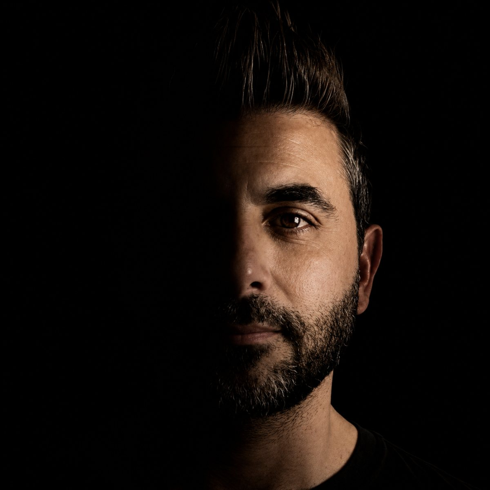

Şarkılar
Her şarkının bir dakikası burada. Devamını Spotify, YouTube Music ya da YouTube'da dinleyebilirsin.

söylenemeyenlere ses olan şarkılar
Her şarkının bir dakikası burada. Devamını Spotify, YouTube Music ya da YouTube'da dinleyebilirsin.
Tamamını dinle